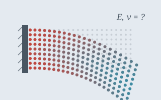

Learning Physical Parameters from Visual Dynamics Ongoing
ARoS Lab, NC State
Converts Gaussian and point-based reconstructions into MPM particles and meshes, then fits material parameters with differentiable simulation in NVIDIA Warp and Newton. Synthetic reference videos of object–force interactions supervise the physical consistency of the result.